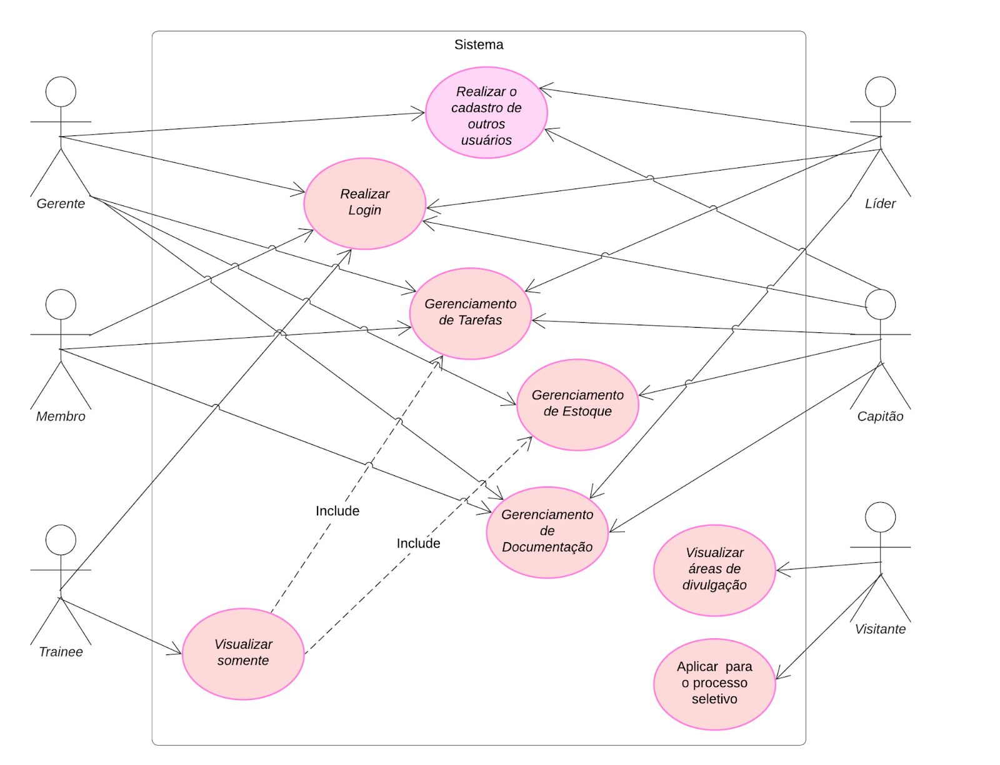
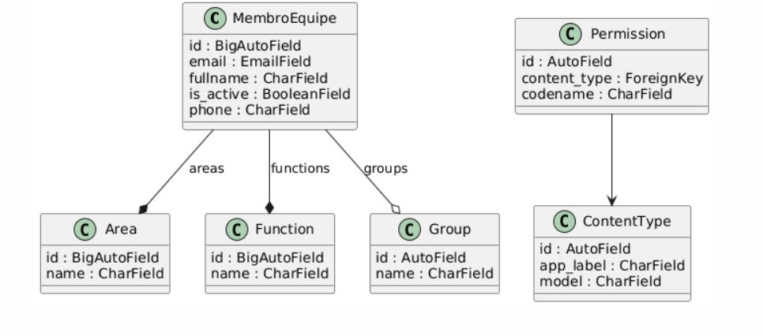
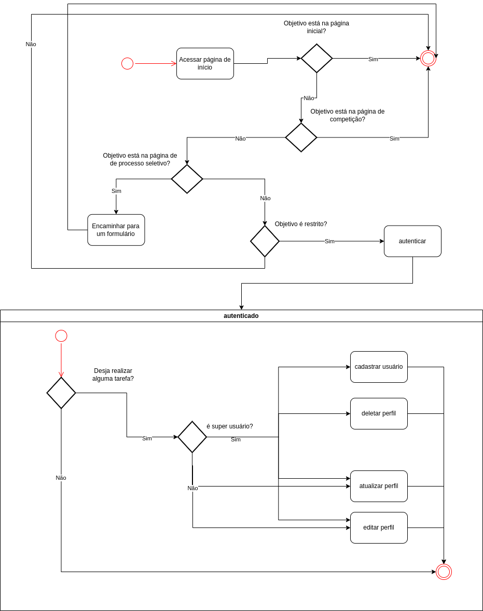
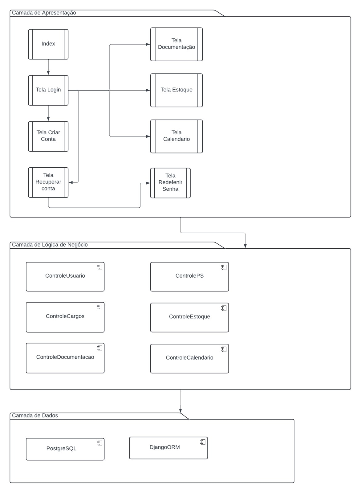
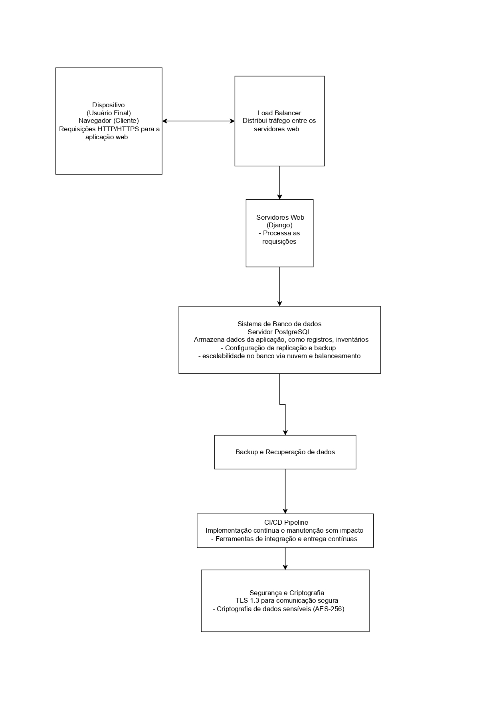

Documento de Arquitetura
1. Introdução
1.1 Propósito
1.2 Escopo
Também terá um site público para divulgar a equipe, suas conquistas, projetos e informações sobre o processo seletivo. Internamente, o sistema inclui funcionalidades de lembrete para o calendário e registro de dados importantes, como voos e acidentes, bem como gerenciamento de estoque.
Com isso, o objetivo é otimizar processos, centralizar informações e destacar a equipe em competições e no meio acadêmico.
Demais detalhes com relação ao escopo do projeto se encontram no documento “Documento de Visão - Áries”, na seção 4.
2. Representação Arquitetural
2.1 Definições
2.2 Justificativa
2.2.1 Separação de Responsabilidades
- Facilita a manutenção e a evolução independente de cada componente.
- Permite alterações no Template (interface do usuário) sem impactar a lógica de negócios no Model.
- Simplifica o desenvolvimento contínuo e modular do sistema.
2.2.2 Reutilização de Componentes
2.2.3 Facilidade de Teste
- Models podem ser validados com testes unitários para garantir a integridade dos dados.
- Views podem ser testadas para confirmar o comportamento esperado das requisições.
- Templates podem ser revisados para verificar se os dados estão sendo apresentados corretamente.
2.2.4 Desenvolvimento Paralelo
- Uma equipe pode desenvolver os Models, configurando o banco de dados e regras de negócio.
- Outra pode focar na criação de Templates e no design das páginas.
- Uma terceira equipe pode trabalhar nas Views, integrando os dados e ajustando a lógica de controle.
2.2.5 Escalabilidade e Adaptação
- Expansões futuras, como novos módulos para gerenciamento de eventos ou integração com novos sistemas.
- Adaptações às demandas específicas da equipe Mamutes do Cerrado, como melhorias no controle de estoque e comunicação automatizada.
2.2.6 Alinhamento às Necessidades
3. Detalhamento
3.1 Camada de Lógica de Negócios (Model)
- Armazenar informações sobre membros, estoques, cronogramas e documentos em um banco de dados relacional.
- Gerenciar processos internos, como registro de atividades, cálculo de métricas (presenças e disponibilidade de recursos) e controle de acesso.
- Fornecer suporte aos relatórios e indicadores de desempenho da equipe.
3.2 Camada de Apresentação (Template)
- Exibição de dashboards com cronogramas, indicadores-chave e relatórios dinâmicos.
- Criação de páginas públicas para divulgar eventos, identidade visual e novidades da equipe.
- Interfaces amigáveis e responsivas para facilitar o gerenciamento interno de recursos como estoques e cronogramas.
3.3 Camada de Controle (View)
- Receber requisições do usuário e retornar respostas adequadas, como páginas HTML ou dados em formato JSON.
- Gerenciar lógica de apresentação dinâmica, como filtrar dados de cronogramas ou estoques com base no perfil do usuário.
- Integração com APIs externas, como o Google Maps, para funcionalidades avançadas, como cálculo de rotas.
3.4 Benefícios do Padrão MVT no Contexto do Sistema
- Organização Modular: Cada camada desempenha um papel distinto, facilitando manutenção e futuras expansões.
- Reutilização e Consistência: Templates reutilizáveis para páginas públicas e privadas garantem consistência visual.
- Escalabilidade: Novas funcionalidades podem ser integradas sem grandes reestruturações.
- Desenvolvimento Colaborativo: Permite que diferentes equipes trabalhem simultaneamente nas três camadas, otimizando o tempo de desenvolvimento.
A figura abaixo ilustra a arquitetura MVT utilizada no desenvolvimento do sistema Mamutes do Cerrado, destacando a interação entre os componentes e suas responsabilidades:

4. Metas e restrições arquiteturais
Metas Arquiteturais
4.1 Escalabilidade Horizontal
Justificativa: Escalabilidade horizontal garante que o sistema possa crescer sem a necessidade de reformulações arquiteturais.
4.2 Manutenibilidade Modular
Justificativa: A arquitetura modular simplifica a adição de novos recursos e facilita correções de erros ou atualizações de componentes.
Restrições Arquiteturais
4.3 Compatibilidade Multiplataforma
Justificativa: Garantir o acesso universal é essencial para que todos os membros possam usar o sistema sem barreiras tecnológicas.
4.4 Uso do Framework Django
Justificativa: O Django é robusto, oferece ferramentas integradas para desenvolvimento ágil e segue boas práticas de segurança e escalabilidade.
4.5 Armazenamento e Banco de Dados
Justificativa: SQLite oferece alto desempenho e suporte para operações complexas, além de ser escalável e compatível com o Django.
5. Visão de Casos de uso (escopo do produto)
Ademais, outros pontos fizeram-se importantes durante a escolha, entre eles estão: a escalabilidade do projeto, facilitando integrações futuras (novos módulos e API's (Interface de Programação de Aplicação) externas, a manutenção descomplicada. O PostgreSQL foi escolhido como banco de dados devido à experiência prévia de membros da equipe com bancos relacionais e ao suporte robusto do Django, enquanto o frontend foi implementado com HTML, CSS e JavaScript.
No que se diz a respeito do escopo geral do sistema, ele pode ser dividido em partes que têm funcionalidades como:
- Gerenciamento de calendários, tarefas e inventários;
- Controle de acesso baseado em perfis personalizados;
- Exibição de informações públicas sobre a equipe, projetos e eventos;
- Gerenciamento de documentação, como logs de voos, ocorrências e administração do estoque de produtos da equipe.
Além disso, o sistema suporta múltiplos níveis de acesso (perfis) , cada um com permissões específicas:
- Capitão: Acesso irrestrito (superusuário);
- Gerente: Pode designar tarefas em todas as áreas (superusuário);
- Líderes: Restritos à designar tarefas apenas em suas áreas específicas, como, por exemplo, o líder do Marketing, poderá gerenciar apenas o Marketing (superusuário);
- Membros: Limitados às suas áreas de atuação, com permissões para alterar calendários e marcar tarefas concluídas;
- Trainees: Podem acessar áreas restritas, mas tem permissão apenas para visualizar;
- Visitantes: Usuários comuns, com acesso apenas à parte pública do site – página inicial e a de inscrição do processo seletivo.
O diagrama abaixo destaca os casos de uso da aplicação e suas interações citadas acima:

6. Visão lógica
Guest:
- Objetivo: Oferecer uma interface visual para usuários não cadastrados.
- Principais Funcionalidades:
- Página inicial com informações públicas;
- Navegação básica nas áreas públicas (apenas visual).
- Componentes:
- Templates: Arquivos HTML para páginas como "Quem somos";
- Views: Controladores para renderizar essas páginas.
Users:
- Objetivo: Atender usuários cadastrados, fornecendo ferramentas de gerenciamento pessoal.
- Principais Funcionalidades:
- Criação de eventos;
- Visualização de tarefas;
- Controle de áreas ocupadas pelos usuários.
- Componentes:
- Models: Estruturas de dados para usuários, tarefas e eventos;
- Views: Regras de negócio e exibição das funcionalidades;
- Templates: Páginas para interagir com as funcionalidades.
Stock:
- Objetivo: Gerenciar a entrada, saída e monitoramento de itens no estoque.
- Principais Funcionalidades:
- Verificar itens em falta;
- Atualizar quantidades de itens;
- Relatórios de consumo e necessidades.
- Componentes:
- Models: Representação de itens e histórico de movimentações;
- Views: Controle de lógica para movimentação de estoque;
- Templates: Páginas para visualização e atualização.
Report:
- Objetivo: Criar e organizar relatórios específicos do sistema.
- Principais Funcionalidades:
- Relatórios de voo;
- Atas de documentos;
- Exportação e formatação de dados.
- Componentes:
- Models: Estruturas para armazenar dados necessários aos relatórios;
- Views: Criação e manipulação dos relatórios;
- Templates: Páginas para configuração e visualização.
O diagrama de classes, ilustrado na próxima figura, coincide com a versão atual do código:


Diagrama de Atividades encontra-se no link: https://www.figma.com/board/MvMowYd0J4NuHSZtLhvr6d/Untitled?node-id=0-1&t=bTk0I6htwaQWrYIt-1
7. Visão de Implementação
7.1 Camada de Apresentação
Em relação aos templates, a aplicação guest contém os templates públicos que podem ser acessados sem a necessidade de uma permissão específica, sendo alguns deles:
- index.html: Página inicial com informações básicas sobre a equipe de competição Mamutes, incluindo as seções "Quem somos", "O que fazemos", "Hall da fama" e "Apoiadores".
- comp.html: Página com informações sobre a SAE Brasil Aerodesign e a jornada da equipe Mamutes na competição.
- admission.html: Página utilizada para divulgação dos processos seletivos da equipe.
Na aplicação users, encontram-se os templates relacionados ao usuário, como cadastro e login, que também são acessíveis ao público. Entre eles estão:
- login.html: Página de login de usuários.
- recoverAccount.html: Página para solicitar o envio de um e-mail de recuperação de senha.
- redefinePassword.html: Página para redefinição de senha.
- register.html: Página para cadastro de novos usuários.
7.2 Lógica e Regras de Negócio
1. Modelos:
- MembroEquipe: É uma extensão do modelo padrão AbstractUser do Django, personalizado para incluir atributos adicionais relevantes ao domínio da empresa, como fullname, email e phone. Além disso, ele possui relações Many-to-Many com os modelos Area e Function, permitindo que um membro seja vinculado a múltiplas áreas e funções.
- Area: Modelo que é utilizado como base para criar as áreas da equipe que o um Membro pode fazer parte.
- Function: Modelo que é utilizado como base para criar as funções que um Membro pode exercer dentro da equipe.
2. Formulários:
- MembroEquipeCreationForm: Permite criar novos membros com campos personalizados e adiciona campos de seleção múltipla (areas e functions) utilizando ModelMultipleChoiceField com CheckboxSelectMultiple.
- MembroEquipeChangeForm: É utilizado para edição das informações de um membro, mantendo os mesmos campos personalizados do formulário de criação.
3. Recuperação de Conta:
-
Fluxo de Recuperação:
A lógica para recuperação de conta é implementada na view
recoverAccount. Quando um usuário insere seu e-mail, o sistema
verifica se existe um registro correspondente no modelo
MembroEquipe.
Se o e-mail existir, um token é gerado utilizando PasswordResetTokenGenerator do Django, e um e-mail é enviado com o link para redefinir a senha.
Caso contrário, o sistema retorna uma mensagem indicando que o e-mail não está registrado - Regras de Negócio: Apenas e-mails cadastrados no sistema podem receber links de redefinição. O token de redefinição de senha é validado antes de permitir a redefinição.
4. Autenticação:
-
Fluxo de Login:
A view login permite que um usuário insira seu nome de usuário e
senha. O sistema utiliza o método authenticate do Django para
verificar as credenciais. Caso as credenciais sejam válidas, o
usuário é autenticado e redirecionado.
Se inválidas, o usuário é redirecionado para a página de login com uma mensagem apropriada. - Regras de Negócio: Somente usuários com credenciais válidas podem acessar o sistema. A autenticação utiliza os recursos padrão do Django, garantindo segurança e escalabilidade.
5. Controle de Acesso:
- Permissões de superusuário: A função isSuperUser verifica se o usuário atual é um superusuário. Essa lógica é usada como decorador em views como register, restringindo o acesso apenas a usuários administradores.
- Permissões de membros: A função login_required delimita áreas que somente membros registrados da equipe de competição possuem acesso
7.3 Comunicação com o Banco de Dados
1. Estrutura do Banco de Dados:
- O banco de dados armazena as informações dos membros da equipe, áreas de atuação e funções. Essas informações são representadas por três modelos principais: MembroEquipe, Área e Function.
- O modelo MembroEquipe é uma extensão do modelo de usuário padrão do Django, com campos adicionais para o nome completo, e-mail e telefone. Ele também se relaciona com os modelos Área e Function, permitindo que um membro pertença a várias áreas e tenha várias funções.
- O Django automaticamente cria as tabelas no banco de dados com base nesses modelos durante o processo de migração.
2. Operações com o Banco de Dados:
- Criação: Quando um novo membro é registrado, os dados são salvos no banco através do formulário MembroEquipeCreationForm, utilizando o método .save() do Django.
- Leitura: As informações dos membros, como e-mail, são consultadas no banco utilizando métodos do ORM, como filter().
- Atualização: Para alterar os dados de um membro, como a senha, o sistema utiliza o método set_password() do Django, que atualiza a senha de forma segura no banco de dados.
- Exclusão: A exclusão de registros pode ser feita usando o método .delete() do Django.
3. Validações e Integridade:
- O Django cuida da integridade dos dados, como garantir que os campos de e-mail sejam válidos e que os relacionamentos entre os modelos, como os vínculos de um membro com áreas e funções, sejam mantidos corretamente no banco.
4. Consultas Simples:
- O sistema utiliza o ORM do Django para realizar consultas simples e recuperar informações de maneira eficiente. As consultas podem ser feitas diretamente nos modelos, como recuperar todos os membros de uma área específica.
Uma representação pode ser observada no seguinte diagrama de pacotes:

8. Visão de Implantação
8.1 Infraestrutura de hardware
- Especificações: De acordo com a necessidade de processamento, a escolha pode ser feita entre servidores dedicados ou servidores em nuvem (AWS, Azure, Google Cloud).
- Justificativa: Dependendo do tráfego esperado, o número de servidores pode variar para garantir a escalabilidade horizontal.
- Especificações: O banco de dados deverá ser dimensionado para suportar a quantidade de dados prevista (por exemplo, até 1 TB no primeiro ano).
- Redundância e Backup: Configuração de backup e replicação do banco de dados para garantir a continuidade dos negócios em caso de falhas.
- Escalabilidade: Em um ambiente de nuvem, a escalabilidade pode ser garantida com balanceadores de carga e instâncias de servidores adicionais conforme necessário.
8.2 Tecnologia e Justificativa
- Justificativa: O Django oferece um desenvolvimento rápido e seguro, com muitos recursos prontos para produção, como autenticação, gerenciamento de banco de dados e segurança.
- O Nginx, por exemplo, é altamente eficiente para servir conteúdo estático e pode atuar como um balanceador de carga, se necessário. Segurança: TLS 1.3 será utilizado para garantir a segurança das comunicações entre o cliente e o servidor, e a criptografia de dados sensíveis será realizada com AES-256.
- Justificativa: A segurança é essencial, pois o sistema lidará com informações sensíveis, como dados pessoais e logs da equipe.
- Justificativa: A escalabilidade horizontal é essencial para que o sistema continue funcionando sem falhas à medida que a equipe cresce ou quando o número de acessos simultâneos aumenta.
- Justificativa: Ele é adequado para armazenar grandes volumes de dados, como registros de membros da equipe, inventário e logs de atividades, além de ser bem suportado pelo Django. E o principal: já vem nativamente nele "django".
8.3 Estratégia de implantação:
- Preparação do Ambiente: Configuração do ambiente de desenvolvimento e testes, com servidores e banco de dados configurados.
- Testes: A realização de testes em ambiente de homologação para validar as funcionalidades e o desempenho do sistema.
- Implantação em Produção: Após os testes, a aplicação será implantada no ambiente de produção. Esta fase inclui a migração do banco de dados e a configuração final de servidores.
- A implantação será realizada de forma contínua, utilizando ferramentas como Docker, Kubernetes, ou CI/CD (Integração Contínua/Entrega Contínua) para facilitar atualizações e manutenção contínua.
- Justificativa: A utilização de CI/CD garante um ciclo de vida de desenvolvimento ágil e permite que novas versões sejam disponibilizadas rapidamente, sem impactar os usuários finais.
8.4 Monitoramento e manutenção:
-
Backup e Recuperação:
- Será implementado um sistema de backup automático para garantir que os dados estejam protegidos e possam ser restaurados em caso de falha.
- Justificativa: O backup frequente é necessário para evitar a perda de dados críticos, como registros de membros e inventários.
8.5 Diagrama de implantação:

9. Restrições adicionais
Restrições de Negócios
- Autenticação Obrigatória
- O sistema será acessível diretamente pela internet, mas exigirá que membros da equipe se autentiquem utilizando credenciais específicas (matrícula e senha), caso o usuário seja um interessado em se inscrever no processo seletivo ou um interessado em patrocinar realizar um cadastro como usuário externo é necessário nesse caso (e-mail e senha).
- Justificativa: A autenticação garante que somente usuários autorizados (como administradores, capitães e membros) tenham acesso às informações e funcionalidades sensíveis do sistema, protegendo a integridade dos dados.
- Acesso Restrito a Perfis
- Funcionalidades críticas, como gerenciamento de estoque, relatório e cronogramas estarão disponíveis apenas para perfis de membros, enquanto trainee terão acesso apenas a funções específicas.
- Justificativa: A segmentação de funcionalidades por perfis de acesso melhora a segurança e organiza o fluxo de trabalho.
Restrições de Qualidade
- Usabilidade
- O sistema será intuitivo e responsivo, com interfaces que atendam aos princípios de design de usabilidade (ISO 9241-11) com o auxílio das técnicas ágeis, no caso as sprints semanais, permitindo que usuários executem tarefas comuns com eficiência e sem necessidade de treinamento extensivo.
- Justificativa: Um design acessível facilita o uso do sistema por diferentes perfis de usuários, incluindo membros menos experientes com tecnologia.
- Portabilidade
- O software será compatível com dispositivos móveis (Android e iOS) e navegadores modernos (Chrome, Firefox, Safari, Edge).
- Justificativa: Garantir o acesso em múltiplas plataformas facilita o uso por membros em diferentes contextos e dispositivos.
- Manutenibilidade
- O código será modular e bem documentado, seguindo os padrões de desenvolvimento do Django, para facilitar correções de erros e futuras expansões.
- Justificativa: A capacidade de realizar manutenção eficiente é fundamental para garantir a evolução contínua do sistema e atender a novas demandas.
- Escabilidade
- O sistema será preparado para aumentar a capacidade de processamento com a adição de servidores, permitindo a expansão conforme a equipe cresça ou os dados aumentem.
- Justificativa: Uma infraestrutura escalável garante que o sistema se adapte ao crescimento, evitando gargalos de desempenho.
10. Bibliografia
NORMANDO, Célio. Arquitetura MVC e princípios de projeto. Disponível em: https://medium.com/@celionormando/arquitetura-mvc-e-princípios-de-projeto-3d0b278ef910. Acesso em: 12 dez. 2024.
DJANGO SOFTWARE FOUNDATION. Documentação do Django. Disponível em: https://docs.djangoproject.com/pt-br/5.1/. Acesso em: 18 dez. 2024.
LUCIDCHART. Tudo sobre diagramas de pacotes UML. Disponível em: https://www.lucidchart.com/pages/pt/diagrama-de-pacotes-uml. Acesso em: 18 dez. 2024.
DIAGRAMA DE CLASSES. Disponível em: https://www.figma.com/board/MvMowYd0J4NuHSZtLhvr6d/Untitled?node-id=0-1&t=TOB4ZlAFt7XZZCeW-1 Acesso em: 18 dez. 2024
Tabela de Versionamento
| Versão | Data | Descrição da Alteração | Nome(s) Integrante(s) |
|---|---|---|---|
| 1.0 | 25/11/2024 | Criação inicial e estrutura do artefato | Felipe Freire |
| 1.1 | 12/12/2024 | Desenvolvimento dos artefatos de propósito, escopo, definições, justificativa, detalhamento e metas e restrições arquiteturais | Felipe Freire |
| 1.2 | 18/12/2024 | Desenvolvimento do tópico 8, visão de implantação | Felipe Duarte |
| 1.3 | 18/12/2024 | Desenvolvimento do tópico 7, visão de implememtação | Othavio Bolzan |
| 1.4 | 18/12/2024 | Desenvolvimento do tópico 5, visão de casos de uso | Amanda Cruz |
| 1.5 | 18/12/2024 | Desenvolvimento do tópico 6, visão lógica (diagrama de classes e de atividades) | Isaque Camargos e Rafael Schadt |
| 2.0 | 19/12/2024 | Revisão do documento | Caio Duarte e Mayara Marques |
| 2.1 | 09/02/2024 | Revisão do documento e atualização dos tópicos 4.5 e 8.2 | Felipe Freire |